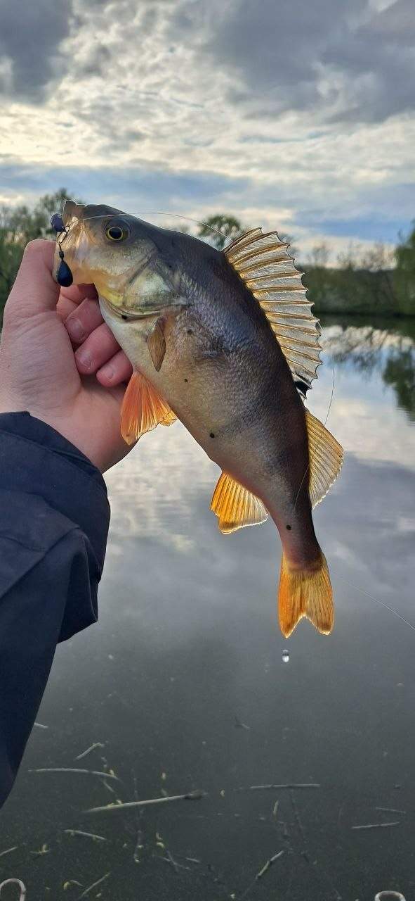

Vorskla River Surface Action
Transcript: A large Northern Pike breaks the water surface aggressively swallowing the bait. After a brief struggle, the pike is carefully netted and released.

Transcript: A large Northern Pike breaks the water surface aggressively swallowing the bait. After a brief struggle, the pike is carefully netted and released.
